layout: true .footer[ - <div class="tooltip"><a href="/"><i class="fas fa-home"></i></a> <span class="tooltiptext">Go to C370 Main Page</span></div> - <div class="tooltip"><a href="/lecture-slides"><i class="fas fa-chalkboard-teacher"></i></a><span class="tooltiptext">Go to Lecture List</span></div> - <div class="tooltip"><i class="fas fa-question"></i><span class="tooltiptext">Press <kbd>Shift</Kbd> + <kbd>?</kbd> for Navigation Tips!</span></div> ] --- class: center <!-- ========================= Title Slide ============================= --> <div style="margin-top: 100px;"></div> <h1 style = "text-align: left; font-weight: bold; margin-left: 175px;">Week 4: Standardization</h1> <h2 style = "text-align: left; font-weight: bold; margin-left: 175px;">Determining $k_A$</h2> <h5 style = "text-align: left; font-weight: bold; margin-left: 175px;">Harvey Chs 3, 4</h5> --- # Standardization > **Standardization:** The process of determining the relationship between the amount of signal generated by a sample and the amount of analyte in the sample (determining $k\_A$) $$ S\_A = k\_A C\_A $$ -- > **Calibration:** The process of *adjusting* the signal to match a known value (changing $k\_A$). ??? --- # Single vs. Multi-point Standardization 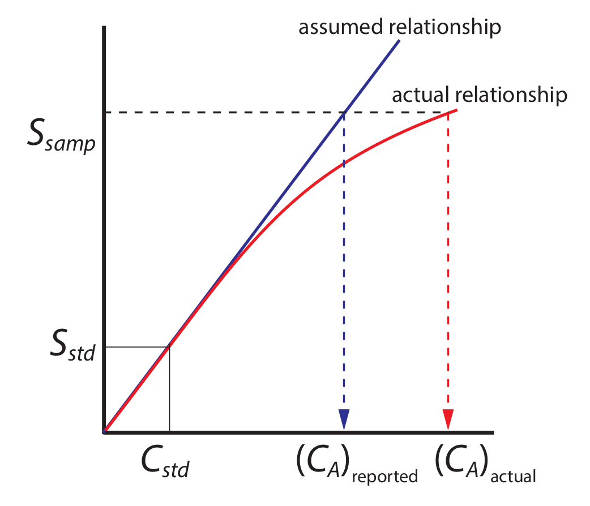 .image-credit[David Harvey / [Analytical Chemistry 2.1](https://chem.libretexts.org/Bookshelves/Analytical_Chemistry/Book%3A_Analytical_Chemistry_2.1_%28Harvey%29) / [CC BY-SA 4.0](https://creativecommons.org/licenses/by-sa/3.0/at/deed.en)] --- # Multi-point Standardization 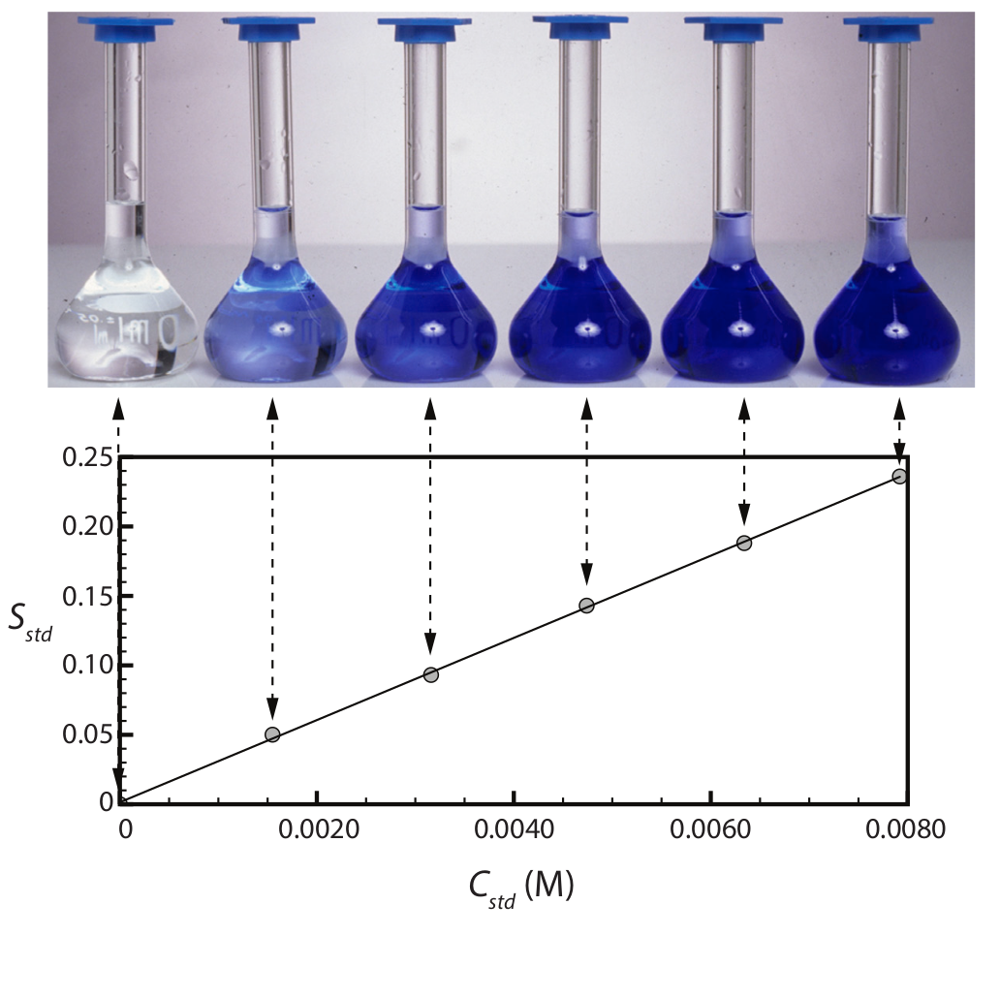 .image-credit[David Harvey / [Analytical Chemistry 2.1](https://chem.libretexts.org/Bookshelves/Analytical_Chemistry/Book%3A_Analytical_Chemistry_2.1_%28Harvey%29) / [CC BY-SA 4.0](https://creativecommons.org/licenses/by-sa/3.0/at/deed.en)] --- # Linear Regression 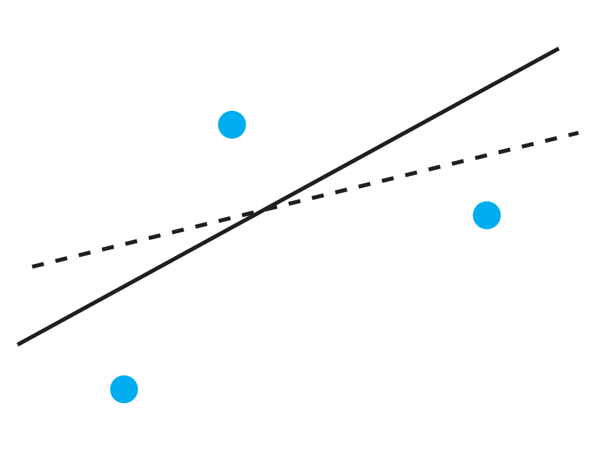 .image-credit[David Harvey / [Analytical Chemistry 2.1](https://chem.libretexts.org/Bookshelves/Analytical_Chemistry/Book%3A_Analytical_Chemistry_2.1_%28Harvey%29) / [CC BY-SA 4.0](https://creativecommons.org/licenses/by-sa/3.0/at/deed.en)] --- # Linear Regression 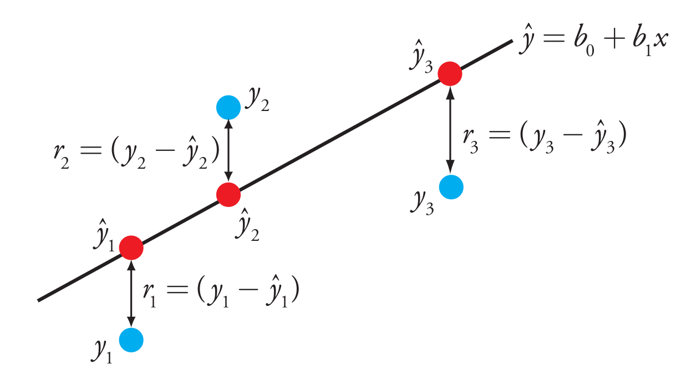 .image-credit[David Harvey / [Analytical Chemistry 2.1](https://chem.libretexts.org/Bookshelves/Analytical_Chemistry/Book%3A_Analytical_Chemistry_2.1_%28Harvey%29) / [CC BY-SA 4.0](https://creativecommons.org/licenses/by-sa/3.0/at/deed.en)] --- # Practice The following data were obtained by measuring 5 external Hg standards: | Concentration (μg / ml) | Sₐ | |:-----------------------:|:-----:| | 0.50 | 0.026 | | 1.00 | 0.054 | | 2.50 | 0.153 | | 3.00 | 0.181 | | 3.50 | 0.210 | Determine $k\_A$ and $b_0$ for the standards. Calculate the concentration of Hg and 95% CI in a sample yielding three replicate signals of $x = [0.0173, 0.0166, 0.0189]$. ??? kₐ = 0.06225 b₀ = -0.005933 R² = 0.99920 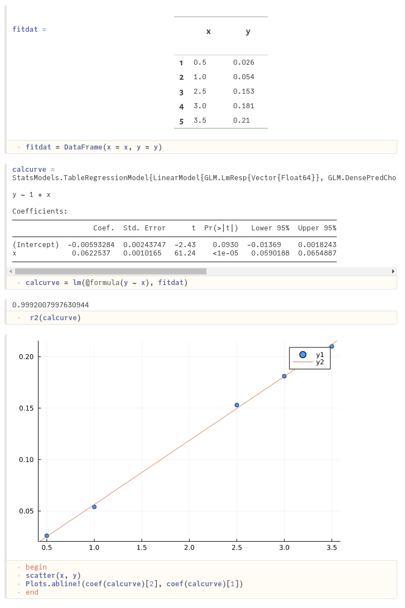 <!-- ========================= QCs ============================= --> --- # Quality Control Samples A **QC** or **Calibration Verification** standard is a sample made at a known concentration used to check the *accuracy* of the standard curve. - Make near concentration of medium standard - Use a different lot number, manufacturer, and/or stock solution - Measured concentration should be ±10% of expected value (EPA Protocols) - If not: check standard calculations, sources of gross error, and (last) contamination or manufacturing defects that occured with that specific lot. <!-- ========================= Standard Addition ============================= --> --- # Standard Addition In **standard addition** a standard is added to each sample to compensate for **matrix effects**. 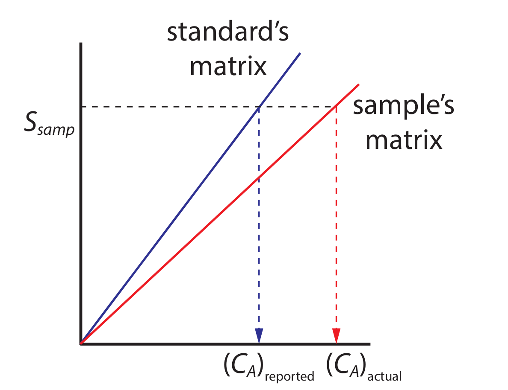 .image-credit[David Harvey / [Analytical Chemistry 2.1](https://chem.libretexts.org/Bookshelves/Analytical_Chemistry/Book%3A_Analytical_Chemistry_2.1_%28Harvey%29) / [CC BY-SA 4.0](https://creativecommons.org/licenses/by-sa/3.0/at/deed.en)] --- # Standard Addition: Single 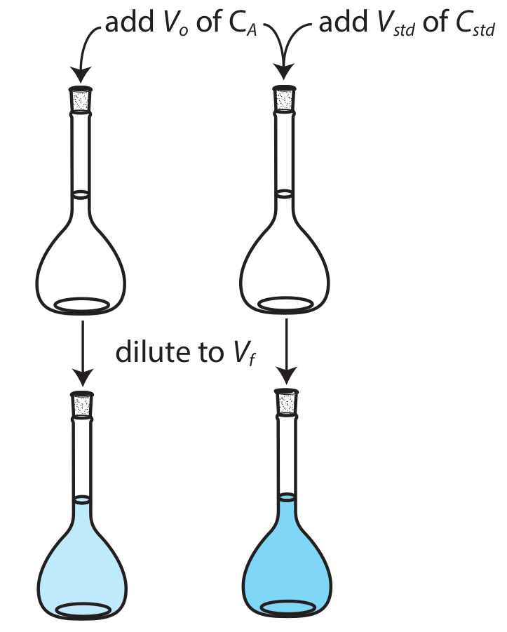 .image-credit[David Harvey / [Analytical Chemistry 2.1](https://chem.libretexts.org/Bookshelves/Analytical_Chemistry/Book%3A_Analytical_Chemistry_2.1_%28Harvey%29) / [CC BY-SA 4.0](https://creativecommons.org/licenses/by-sa/3.0/at/deed.en)] --- # Standard Addition: Multiple 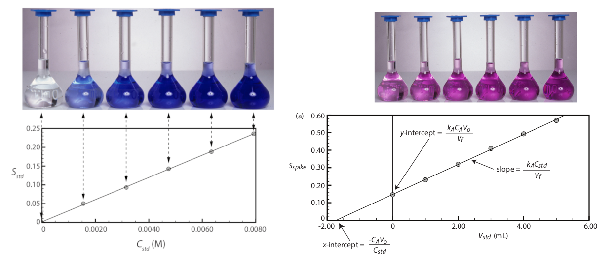 .image-credit[David Harvey / [Analytical Chemistry 2.1](https://chem.libretexts.org/Bookshelves/Analytical_Chemistry/Book%3A_Analytical_Chemistry_2.1_%28Harvey%29) / [CC BY-SA 4.0](https://creativecommons.org/licenses/by-sa/3.0/at/deed.en)] --- # Standard Addition: Multiple 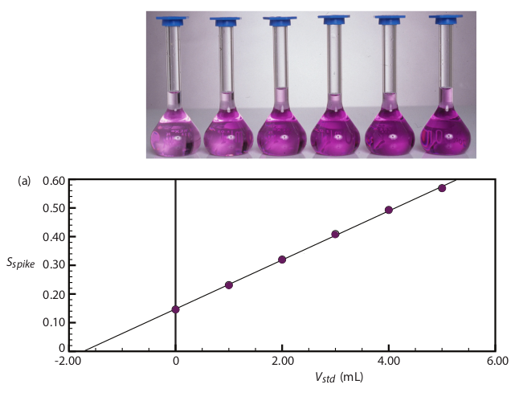 .image-credit[David Harvey / [Analytical Chemistry 2.1](https://chem.libretexts.org/Bookshelves/Analytical_Chemistry/Book%3A_Analytical_Chemistry_2.1_%28Harvey%29) / [CC BY-SA 4.0](https://creativecommons.org/licenses/by-sa/3.0/at/deed.en)] --- # Standard Addition: CI The CI for concentration determined by standard addition is similar to external standards: $$ s\_{C\_a} = \frac{s\_r}{b\_1} \sqrt{ \frac{1}{n} + \frac{(\overline{S}\_{STD})^2}{(b\_1)^2 \sum\_{i = 1}^n \left( C\_{STD, i} - \overline{C}\_{STD} \right)^2} } $$ <!-- ========================= Running Standards ============================= --> --- # Example Run List 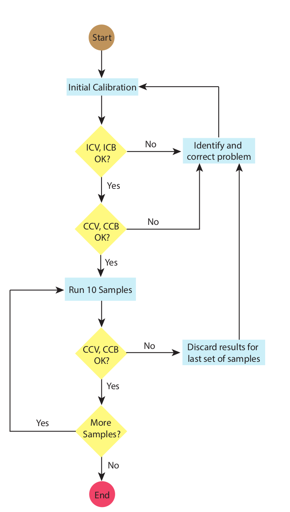 .image-credit[David Harvey / [Analytical Chemistry 2.1](https://chem.libretexts.org/Bookshelves/Analytical_Chemistry/Book%3A_Analytical_Chemistry_2.1_%28Harvey%29) / [CC BY-SA 4.0](https://creativecommons.org/licenses/by-sa/3.0/at/deed.en)] --- # Example Run List 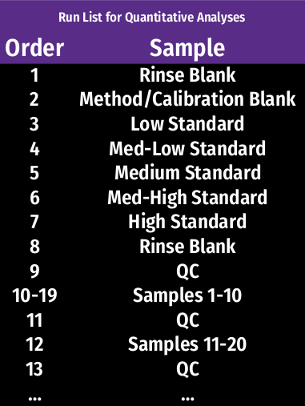 <!-- ========================= Limits of Detection ============================= --> --- # Limit of Detection 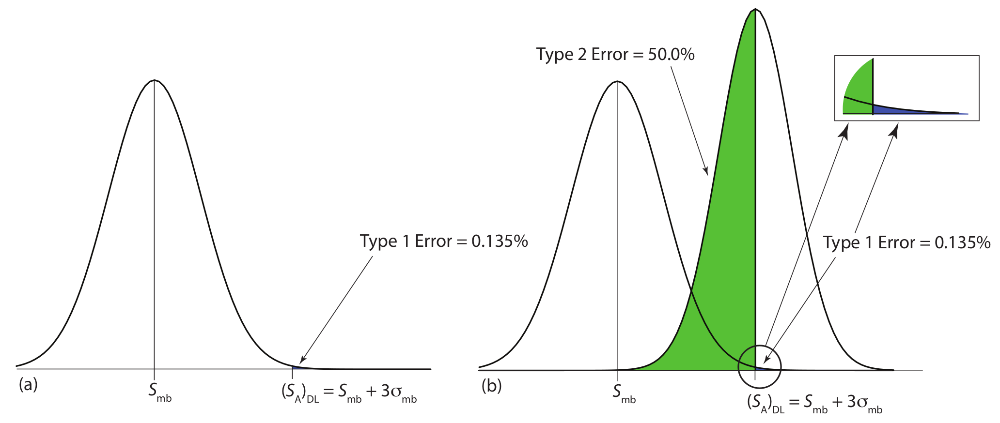 .image-credit[David Harvey / [Analytical Chemistry 2.1](https://chem.libretexts.org/Bookshelves/Analytical_Chemistry/Book%3A_Analytical_Chemistry_2.1_%28Harvey%29) / [CC BY-SA 4.0](https://creativecommons.org/licenses/by-sa/3.0/at/deed.en)] ??? # Limits of Detection - Lower Limit of Detection $$ LOD = S\_{mb} + 3s\_{mb} $$ or $$ LOD = \frac{3s\_{mb}}{k\_A} $$ - Lower Limit of Quantitation $$ LOD = S\_{mb} + 10s\_{mb} $$ or $$ LOD = \frac{10s\_{mb}}{k\_A} $$ <!-- ========================= Upper Limit of Detection ============================= --> --- # Upper Limit of Detection The following Data Were Obtained: | Concentration (μg / ml) | Sₐ | |:-----------------------:|:-----:| | 0.50 | 0.026 | | 1.00 | 0.045 | | 2.50 | 0.090 | | 5.00 | 0.199 | | 7.50 | 0.274 | | 10.0 | 0.363 | | 12.5 | 0.415 | | 15.0 | 0.458 | | 17.5 | 0.485 | What is the LLOQ, ULOQ, and LDR? <!-- =============================================================================== -->